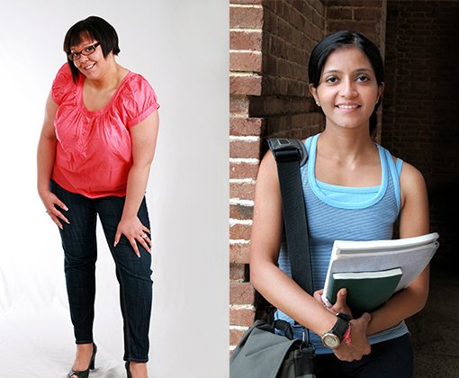
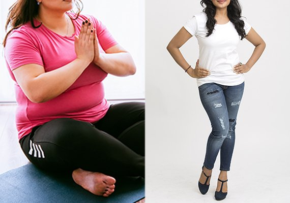

पतले होने के इस तरीके ने मुझे एक राक्षसी से सुंदर परी बना दिया
यह कहानी एक असली ग्राहक की है। शरीर की व्यक्तिगत बनावट के अनुसार परिणाम अलग-अलग आ सकते हैं।
हैलो, एक बार फिर से मैं आपसे कुछ शेयर करना चाहती हूँ! आज मैं आपसे अपनी छोटी सी कहानी शेयर करूंगी कि कैसे मैंने अधिक वजन पर कैसे विजय पाई। यह सच्ची कहानी है एक बीमारी की, प्यारे पति से तलाक़ की और इन मुश्किलों से लड़ कर इन पर विजय पाने की।
मेरी ज़िंदगी में एक ट्रेजेडी घटी थी - मेरा बच्चा गिर गया था। मैं इतनी डिप्रेस हो गई थी कि कई महीनों तक घर से बाहर ही नहीं निकलती थी, और बस घर पर रह कर खाती थी और रोती थी। मुझे पता था कि मैं तेजी से मोटी हो रही थी लेकिन बेबस थी। मैं दिन भर बिस्किट, नमकीन और आइस-क्रीम खाती थी। बड़ी जल्दी ही मेरी सारी जींस मुझे टाइट हो गईं, मैं ब्लाउजों के बटन भी नहीं लगा पाती थी। जब मेरे पति ने देखा मैं क्या बन गई हूँ, वे मुझे छोड़ कर चले गए।
एक दिन उसने मुझसे ये भी कहा था कि मुझे ऐसी मनहूस पत्नी नहीं चाहिए जो एक बच्चे को भी जन्म नहीं दे सकी और ऊपर से भैंस जैसी मोटी भी हो गई है। आप कल्पना भी नहीं कर सकतीं कि मुझे ये बातें कितनी चुभीं: जिस आदमी से मैं इतना प्यार करती थी उसने मुझे इतना बेइज़्ज़त किया, मुझे इतना चिड़चिड़ा बना दिया और फिर सीधे तलाक का केस लगा दिया। हम विदेश में रहते थे और मेरी ज़िंदगी में पहले ही बहुत टेंशन थी क्योंकि वहाँ नौकरी बड़ी कठिन थी और कोई दोस्त-भाई भी नहीं थे। और अब मेरे पूरे प्लान, उम्मीदें और जीवन की उमंग ताश के पत्तों की तरह बिखर कर रह गई थीं। मैंने तो कई बार आत्महत्या भी करने की सोची क्योंकि मैं अपने पति और बच्चों के बिना ज़िंदगी की कल्पना भी नहीं कर सकती थी। मेरी एक सहेली मुझे बहुत फोर्स करके डॉक्टर के यहाँ ले गई, और डॉक्टर ने कहा कि आपको पतला होना बहुत जरूरी है ताकि हॉरमोन का बैलेंस ठीक हो सके और मैं एक स्वस्थ बच्चे को जन्म दे सकूँ...
अब टाइम आ गया था अपनी खुद की देखभाल करने का!
मेरे पूर्व-पति के मेरे शरीर के बारे में कहे अपशब्द मेरे कानों में गूँजते रहते थे। आईने के सामने खड़े होकर जब मैं अपने शरीर को देखती थी तो मोटापे के कारण शर्म से पानी-पानी हो जाती थी। फिर मैंने फैसला लिया कि मुझे अब बदलना होगा और अपने आप को ठीक करना ही होगा।
और फिर मैंने शुरू किया अपने शरीर का कायाकल्प: मैंने कई तरह की एक्सरसाइज़े, योगा, गोलियां, आयुर्वेद, मंहगी क्रीमें, एंटी-सेल्यूलाइट मसाज तथा और भी कई तरह के मंहगे ट्रीटमेंट ट्राई किए। ये सब कभी काम नहीं करते। सब बेकार होते हैं। इनसे एक परसेंट भी फायदा नहीं होता। मैं मजबूर थी और मैंने मोटापे को अपनी नियति मान लिया था। मुझे लगता था ऐसी कोई चीज नहीं है जो मेरा वजन कम कर सकती थी। मुझे इतनी बेबसी महसूस होती थी कि मैं रोने लगती थी। मैंने अपनी कोशिशें लगभग बंद ही कर दीं थीं।
क्या कम समय में पतले होना संभव है भी?!
एक बार में हमेशा की तरह इंटरनेट पर ब्लॉग्स पढ़ रही थी और तभी अचानक मुझे एक बड़ी दिलचस्प पोस्ट मिली। एक सुंदर लड़की ने अपनी कहानी बताई थी, उसने लिखा था कि वो बचपन से बेहद मोटी थी और कैसे उसने पतले होने की ठान ली थी और वो घर पर ही अपना आधा वजन कम करने में कामयाब हो गई थी। ऐसा करने के लिए उसने एक सप्लिमेंट लिया था जिसका नाम था । मैंने ये लेख बड़े ध्यान से पूरा पढ़ा।
पहले तो मैं इसके असर पर भरोसा नहीं कर रही थी - आखिर कितनी फालतू चीजों को मैं झेल चुकी थी - तरह तरह की
दवाइयाँ, टीवी के विज्ञापन और यही सब देख-देख कर मेरा भरोसा ही उठ गया था... लेकिन वो लड़की इंटरनेट में एक
इज्ज़तदार व्यक्ति थी और वो अपनी "पहले और बाद की" फोटो भी सबूत के तौर पर दिखाई थी, और यही कारण था कि मुझे
उसकी सलाह पर भरोसा हुआ।
और इसलिए मैंने ऑर्डर कर दी।
पहले तो मुझे डर लगता था कि ये कहीं कोई धोखाधड़ी तो नहीं है। लेकिन फोन पर ऑपरेटर ने समझाया कि मुझे पेमेंट
तभी करनी पड़ेगी जब मुझे पार्सल मिल जाएगा, और मैं पेमेंट करने के पहले हर चीज को चेक कर सकती हूँ। ये तो
कहना पड़ेगा कि हर डेलीवरी बहुत तेजी से हुई, सिर्फ एक हफ्ते में ही आ गई। मैंने पैकेट खोला, सावधानी से
निर्देश पढ़े और इसे लेने लगी।

इसका नतीजा क्या हुआ?
दुबले होने के लिए का इस्तेमाल बहुत आसान है - मैंने बस हर बार खाने के पहले एक कैप्सूल लिया और पानी के साथ उसे निगल लिया। वैसे मैं इस प्रोडक्ट को लेकर बहुत उत्साहित नहीं थी, मुझे नहीं लगता था कि ये कोई बड़ी स्पेशल चीज है। लेकिन धीरे-धीरे मैंने महसूस किया कि मेरे शरीर की चर्बी बटर की तरह पिघलने लगी थी।
शुरू में तो मेरा वजन इतना ज़्यादा था कि साफ नतीजे दिखने में थोड़ा टाइम लगा। मैंने घर पर वजन नापने की मशीन भी नहीं रखी थी, मुझे अपनी बॉडी का वजन देख-देख कर ही बहुत टेंशन होती थी। और इसलिए मैंने फैसला किया कि यदि से मुझे कुछ फायदा होने वाला है तो फर्क मुझे वैसे भी दिखेगा।
मेरे ख्याल से लगभग 2 हफ्तों के अंदर मुझे साफ असर दिखने लगा था। पहले तो मेरे पैंट ढ़ीले होने लगे, लेकिन मैंने सोचा कि हो सकता है वे ज़्यादा स्ट्रेच हो गए हैं और उन्हें बस धोने की जरूरत है। थोड़े दिन बाद - एक और सरप्राइस - मुझे एक नया बेल्ट खरीदना पड़ा क्योंकि मेरे पैंट नीचे खिसक गए थे! मैं नहीं जानती थी कि तब तक मैंने कितने किलो कम कर लिए होंगे लेकिन मुझे बहुत हल्का महसूस होने लगा था, और यहाँ तक कि मुझे सांस लेने में भी आसानी लगने लगी थी!
और फिर मेरा सीना पतला हो गया, लेकिन मुझे खराब नहीं लगा क्योंकि मेरा सीना पहले बेहद फूला हुआ था।
एक
महीने में मुझे पता लग गया था कि मैं पक्के में दुबली हुई हूँ और इसलिए बगैर और सोचे मैं नए कपड़े खरीदने चली
गई। मैंने जान-बूझ कर स्ट्रेच बेल्ट वाला लंबा स्कर्ट और चौड़ा ब्लाउज़ खरीदा क्योंकि मुझे पता था कि से मेरा दुबला होना अभी आगे भी जारी रहेगा)
और जैसा मैंने सोचा था, काम पर हर कोई मुझे इतनी जल्दी पतला देखकर सवाल करता था और सच जानना चाहता था। हमारे ऑफिस में एक बहुत ही हैंडसम लड़का था जो अब मेरे पीछे पड़ गया था, वो कहता था कि वो मेरे पति से जलता था: क्योंकि मैं स्मार्ट थी, दिलचस्प था और अब मैं सुंदर भी हो गई थी :) तेजी से पतले होने के कारण मेरी लाइफ अब और पहलुओं में भी बदल रही थी। अब सब लड़के मेरी तरफ आकर्षित होते थे और मुझे बहुत तारीफ़ें सुनने मिलती थीं। ये सब सुनकर दिल अच्छा हो जाता है! और मैं शादी भी करने जा रही हूँ। जी हाँ, मैं अपने ऑफिस में काम करने वाले इसी हैंडसम आदमी से शादी करने जा रही हूँ। पतले होने के कारण मेरा हॉरमोन का बैलेंस भी ठीक हो गया है और अब मैं एक आदर्श पत्नी और माँ बनने के लिए तैयार हूँ। अब मेरा भी एक सुंदर और खुश परिवार होगा जहाँ कोई किसी को बुरा नहीं कहता!
लाइफ में सरप्राइज़ आते रहते हैं: मेरे पुराने पति ने कभी मुझे बेइज़्ज़त करके घर से निकाल दिया था लेकिन मैं बीमारी और डिप्रेशन से लड़ कर बाहर निकल पाई और और मैंने वजन भी घटा लिया। अब मैं सबसे खुश, सबसे दुबली और सबसे सुंदर लगने लगी थी!!!!
मैं बहुत खुश हूँ कि मेरी लाइफ में ये सब हुआ। जब मैं दुबली हो गई तो मैंने एक चीज महसूस की: हममें से ज़्यादातर लोगों की दिक्कत यह होती है कि हम सबसे सरल हल को सबसे कम असरदार मानते हैं। लेकिन ऐसा होता नहीं है! आप बड़ी जल्दी एक नैचुरल, तेज और सुरक्षित तरीके से वजन घटा सकती हैं और इसके लिए आपको कोई डाइट या एक्सर्साइज़ भी नहीं करनी पड़ेंगी। मैंने ये खुद आजमा कर देखता है! वैसे, इतने दिनों बाद भी मेरा वजन बढ़ा नहीं है :)
और जो लोग जानना चाहते हैं उनको बताना चाहूंगी कि मैंने इस साइट से ऑर्डर किया था। जहाँ तक डेलीवरी का सवाल है, इनके पैकेज दुनिया भर में पोस्ट से भेजे जाते हैं, इनके बॉक्स पर सब छुपा होता है। इसलिए हर चीज बिल्कुल सुरक्षित होती है और आपके राज़ कोई नहीं जान पाता
। का दाम पिक्चर की दो टिकटों या एक बार सुपरमार्केट में शॉपिंग करने से ज़्यादा नहीं है। मेरी सोच से तो इस तरह के असरदार प्रोडक्ट का रेट कम से कम दोगुना होना चाहिए!
तो मैं उम्मीद करती हूँ कि ये जानकारी आपके काम आएगी और आप आखिरकार कम से कम समय में दुबली होकर अपना फिगर वापस पा लेंगी! ऑल द बेस्ट!
हैलो संगीता! मैं भी की मदद से दुबली हो गई। सबसे बढ़िया बात तो ये रही थी ये सब कितना आसान था; मुझे कुछ परहेज नहीं करनी पड़ी और फिर भी मैंने बहुत वजन घटा लिया। कोई और डाइट इस तरह के रिज़ल्ट नहीं दे सकती थी। और इसलिए मैं आपसे पूरी तरह सहमत हूँ!
मैं बिल्कुल सहमत हूँ, ज़्यादा वजन होने से बड़ी दिक्कत होती है! मैं इसे अच्छी तरह से समझ सकती हूँ क्योंकि मैं 100 किलो से भी ज़्यादा की थी। भगवान का शुक्र है कि डॉक्टर ने मुझे लेने को कहा और तीन महीने में मैं दुबली होकर अच्छा महसूस करने लगी - अब न साँस फूलती है, न ज़्यादा पसीना आता है और न कोई झंझट होती है।  शरीर की व्यक्तिगत बनावट के अनुसार परिणाम अलग-अलग आ सकते हैं।
अरे यार मुझे भी ऑर्डर देना चाहिए। उम्मीद है मुझे भी फायदा होगा...
हैलो, मेरी प्रोग्रेस थोड़ी धीमी है। लेकिन कुछ किलो तो कम हुए हैं, इसलिए मैं तो खुश हूँ

मैं इस सप्लिमेंट को 2 हफ्ते से ले रही हूँ। काफी दुबली हो गई हूँ, और इससे ज़्यादा खुशी की चीज और कुछ हो ही नहीं सकती।
शानदार! मुझे भी ये चाहिए यार। लेकिन मैं चेरापूंजी में रहती हूँ। पता नहीं यहाँ मिलती है कि नहीं।
मैंने उसी वेबसाइट से ऑर्डर की जहाँ से संगीता ने की थी। ये दुनिया भर में डेलीवरी देते हैं। लेकिन यदि पोस्ट में कुछ टूट-फूट हो जाती है तो इनको पहले ही बता देना चाहिए ताकि आप डेलीवरी लेने से मना कर सकती हैं।
हैलो दोस्तों, मैं काफी लंबे समय से दुबले होने के एक अच्छे प्रोडक्ट की तलाश में हूँ, और तभी मैंने को आजमा कर देखा - मैं क्या कहूँ यार - इसने मेरे परिवार को और मेरी शादी को बिखरने से बचा लिया )! ये तो एक चमत्कार ही था! मेरे पति ने मुझे फिर से एक औरत की तरह देखना शुरू कर दिया, और इसे मेरा आत्मविश्वास बढ़ गया है और सबसे बड़ी बात, अब हर चीज आसान लगी है!)))
वैसे ये कोई ज़्यादा मंहगी नहीं है। ट्राय करना चाहिए। मैं भी थोड़ी दुबली होना चाहती हूँ)
मेरा पहला दिन है, उम्मीद है काम आएगी ये
संगीता तुम्हारा बहुत-बहुत धन्यवाद! जरूरत से ज़्यादा वजन बड़ी तेजी से चला गया और सबसे अच्छी खबर तो ये है कि वजन वापस नहीं आता! ये एक चमत्कार है, और मैंने अपनी सहेलियों को भी ये प्रोडक्ट लेने की सलाह दे दी है। ये सब उपवास करके इतनी परेशान हो गई हैं कि मुझे लगता है चक्कर खाकर गिरने वाली ही हैं )
शानदार!!! जबर्दस्त!!!!

मैं भी आपके दुबले क्लब में शामिल होना चाहती हूँ!) मुझे मेरा का पार्सल मिल गया है! फीडबैक के लिए सबको थैंक्स, आपके शब्दों और फोटो से ही मैं फिर से वजन घटाने के लिए प्रेरित हुई। मैं अपनी प्रगति के बारे में जरूर लिखूँगी!!!
सलाह के लिए थैंक्स! मैं जरूर ट्राय करूंगी। जब कुछ प्रोग्रेस होगी तो जरूर रिज़ल्ट शेयर करूंगी
मैं बेहद खुश हूँ कि मुझे ये पेज मिला और मैं सच में उम्मीद लगाए हूँ कि इससे मुझे फायदा होगा। मैंने वजन घटाने के लिए कई चीजें ट्राय करके देखी हैं लेकिन ठीक से फायदा नहीं होता। मेरी हाइट 5 फुट 3 इंच है और वजन 105 किलो है, बहुत खराब लगता है! इंसान को भगवान ऐसा कभी न बनाए! मैं 35 किलो कम करना चाहती हूँ। यहाँ के रिव्यू और वजन कम करने के सप्लिमेंट के डिटेल पढ़ कर तो मैं बहुत उम्मीद करती हूँ कि ये सच में असरदार है और इसमें मुझे कोई शक नहीं है।
किसी स्लिमिंग प्रोडक्ट से 30 किलो कम करना संभव नहीं है।
मैं भी ऑर्डर करने वाली हूँ ... कल मैंने वजन नापा... बहुत बढ़ गया है (((
सच कह रही हूँ, ये एक जादू है! मेरा मोटा पेट और टायर गायब हो गए। अब मैं टाइट ड्रेस पहन सकती हूँ और अपने आप पर शर्म भी नहीं आती! ये!
मुझे का पैकेज मिले 22 दिन हो गए हैं। कई बार मैं इसे लेना भूल जाती हूँ इसलिए ज़्यादा वजन नहीं घटा पाई। लेकिन एक बात तो तय है - मुझे अब पहले से काफी बेहतर लगने लगा है। अब मुझे हंसने और तितली जैसे उड़ने की इच्छा होती है, मैं इतनी हल्की हो गई हूँ न, बहुत अच्छा लगता है ऐसे!
पता नहीं यार, मुझे तो लगता है ये सब बकवास है
मैंने के 3 पैकेज ऑर्डर किए। संगीता और दूसरी लड़कियों को धन्यवाद जो उन्होने अपने अनुभव यहाँ बताए, आपके रिव्यू पढ़कर मैं भी तैयार हो गई थी! जैसा मैंने वादा किया था कि मैं अपने रिज़ल्ट जरूर पोस्ट करूंगी, मैं आज यहाँ लिख रही हूँ। इसका सिस्टम जबर्दस्त है, मैंने काफी वजन कम कर लिया! ये मेरी व्यक्तिगत जीत है!!! मुझे अपने पर गर्व है!!!  शरीर की व्यक्तिगत बनावट के अनुसार परिणाम अलग-अलग आ सकते हैं।
मेरी थाईलैंड में एक सहेली है और वो भी इसी को लेकर दुबली हो रही है। उसकी वजह से मैं भी इसकी कायल हो गई। मुझे इस प्रोडक्ट के बारे में पहले से पता है! इसको एक बार ट्राय करो।
मुझे इसको लेते अभी सिर्फ 2 दिन हुए है। अभी तो असर बताना थोड़ा जल्दी होगा। लेकिन ये तो कहना पड़ेगा कि इससे एनर्जी आती है।
मुझे इसको लेते अभी सिर्फ 2 दिन हुए है। अभी तो असर बताना थोड़ा जल्दी होगा। लेकिन ये तो कहना पड़ेगा कि इससे एनर्जी आती है। ले रही हूँ और विश्वास से कह सकती हूँ कि: मैं प्रोग्रेस कर रही हूँ! मैं दुबली हो रही हूँ, जो सबसे बढ़िया चीज है। मैं अभी अपनी फोटो तो शेयर नहीं करूंगी, तब तक तो नहीं जब तक अपने लक्ष्य तक न पहुँच जाऊँ। मैं सुबह और शाम को लेती हूँ। मुझे इसे ऑफिस नहीं ले जाना पड़ता। इससे झंझट नहीं होती! मैं जो मर्जी खाती हूँ बस मैं अधिक नहीं खाती! मुझे बहुत अच्छा लगने लगा है!


क्या बात है! मेरे पास तो कहने को शब्द नहीं है, अब आप कितनी सुंदर लगने लगी हैं! मोटे होने से वाकई में आदमी की उम्र ज़्यादा लगने लगती है और लोग इज्ज़त नहीं करते। इससे महिला का रंग-रूप और लाइफ बर्बाद हो जाते हैं! मैं आपकी और आपके परिवार की खुशियों और स्वास्थ्य की मनोकामना करती हूँ!